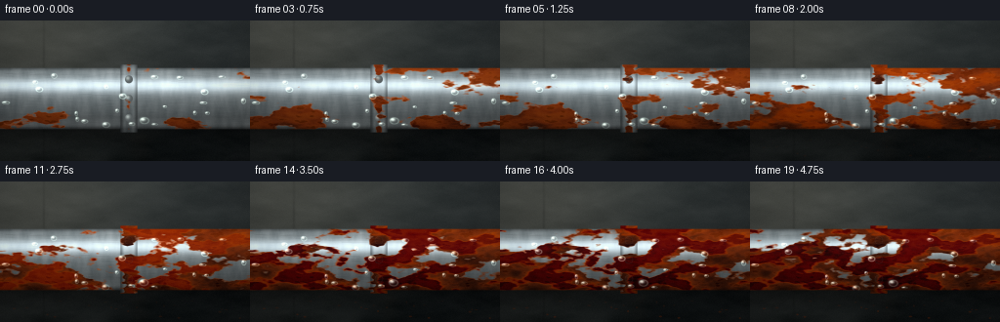
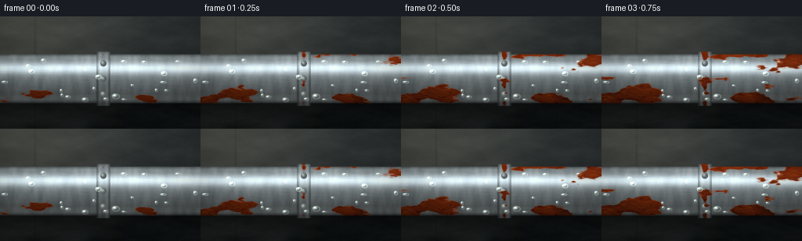
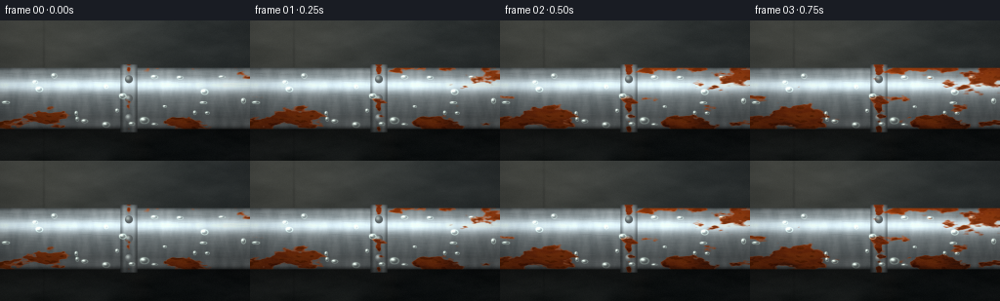
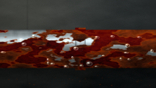
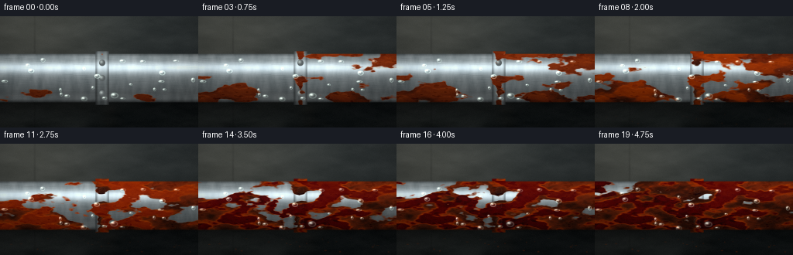
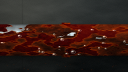

CODING AGENTS AS PIXEL WORLD MODELS
traex/DeepSeek-V4.1-Flash · material_0048
点击播放 · 原生 RGB 像素
逐轮保存的候选
回放视频、检查图与代码变化。
每份候选均可单独播放。实际图片检查记录在下方工具轨迹中。
候选 01播放与检查图
点击播放 · 原生 RGB 像素

展开代码变化
--- 上一保存版本
+++ 本次保存版本
@@ -0,0 +1,467 @@
+from pathlib import Path
+
+import cv2
+import numpy as np
+from PIL import Image
+
+import artifact_io
+
+
+CASE_DIR = Path(__file__).resolve().parent
+WIDTH, HEIGHT = 256, 144
+FRAMES, FPS = 20, 4.0
+SS = 3
+W, H = WIDTH * SS, HEIGHT * SS
+RNG = np.random.default_rng(18473)
+
+
+def smoothstep(edge0, edge1, x):
+ t = np.clip((x - edge0) / (edge1 - edge0), 0.0, 1.0)
+ return t * t * (3.0 - 2.0 * t)
+
+
+def noise_grid(shape, cells, rng):
+ ch = max(2, int(cells[0]))
+ cw = max(2, int(cells[1]))
+ small = rng.random((ch, cw), dtype=np.float32)
+ arr = cv2.resize(small, (shape[1], shape[0]), interpolation=cv2.INTER_CUBIC)
+ arr = cv2.GaussianBlur(arr, (0, 0), 0.7)
+ return arr
+
+
+def fbm(shape, base_cells, octaves, rng, persistence=0.5):
+ result = np.zeros(shape, dtype=np.float32)
+ norm = 0.0
+ amp = 1.0
+ for _ in range(octaves):
+ result += amp * noise_grid(shape, base_cells, rng)
+ norm += amp
+ base_cells = (base_cells[0] * 2.0, base_cells[1] * 2.0)
+ amp *= persistence
+ result /= norm
+ lo, hi = np.percentile(result, [1.0, 99.0])
+ return np.clip((result - lo) / (hi - lo + 1e-6), 0.0, 1.0).astype(np.float32)
+
+
+def normalize01(arr):
+ lo, hi = np.percentile(arr, [1.0, 99.0])
+ return np.clip((arr - lo) / (hi - lo + 1e-6), 0.0, 1.0).astype(np.float32)
+
+
+def mix(a, b, t):
+ return a * (1.0 - t[..., None]) + b * t[..., None]
+
+
+def composite(base, layer, alpha):
+ return base * (1.0 - alpha[..., None]) + layer * alpha[..., None]
+
+
+def draw_line(mask, p0, p1, value, thickness=1):
+ cv2.line(
+ mask,
+ (int(round(p0[0])), int(round(p0[1]))),
+ (int(round(p1[0])), int(round(p1[1]))),
+ float(value),
+ thickness,
+ lineType=cv2.LINE_AA,
+ )
+
+
+def make_assets():
+ yy, xx = np.mgrid[0:H, 0:W].astype(np.float32)
+ nx = xx / (W - 1)
+ ny = yy / (H - 1)
+
+ cy = 0.555 * H
+ radius = 0.218 * H
+ v = (yy - cy) / radius
+ z = np.sqrt(np.clip(1.0 - v * v, 0.0, 1.0))
+ pipe_mask = (np.abs(v) <= 1.0).astype(np.float32)
+
+ collar_cx = 0.515 * W
+ collar_half = 0.034 * W
+ collar_radius = radius * 1.105
+ vc = (yy - cy) / collar_radius
+ zc = np.sqrt(np.clip(1.0 - vc * vc, 0.0, 1.0))
+ collar_mask = (
+ (np.abs(xx - collar_cx) <= collar_half) & (np.abs(vc) <= 1.0)
+ ).astype(np.float32)
+ object_mask = np.maximum(pipe_mask, collar_mask)
+
+ n_wall_low = fbm((H, W), (3, 2), 5, RNG)
+ n_wall_mid = fbm((H, W), (11, 7), 4, RNG)
+ n_wall_fine = fbm((H, W), (38, 24), 3, RNG)
+ n_metal = fbm((H, W), (7, 42), 4, RNG)
+ n_rust_low = fbm((H, W), (4, 3), 5, RNG)
+ n_rust_mid = fbm((H, W), (15, 10), 4, RNG)
+ n_rust_fine = fbm((H, W), (52, 34), 3, RNG)
+
+ brushed = RNG.normal(0.0, 1.0, (H, W)).astype(np.float32)
+ brushed = cv2.GaussianBlur(brushed, (0, 0), sigmaX=10.0, sigmaY=0.65)
+ brushed = normalize01(brushed)
+
+ scratches = np.zeros((H, W), dtype=np.float32)
+ for _ in range(25):
+ x0 = RNG.uniform(-0.04 * W, 0.94 * W)
+ y0 = RNG.uniform(cy - 0.82 * radius, cy + 0.82 * radius)
+ length = RNG.uniform(0.035 * W, 0.22 * W)
+ slope = RNG.uniform(-0.035, 0.035)
+ x1 = x0 + length
+ y1 = y0 + slope * length
+ draw_line(scratches, (x0, y0), (x1, y1), RNG.uniform(0.25, 0.75), 1)
+ scratches = cv2.GaussianBlur(scratches, (0, 0), 0.55)
+
+ # Seeds make corrosion begin at the coupling seam, bolts, lower rim, and scratches.
+ def gauss(cx, cyv, sx, syv):
+ return np.exp(-0.5 * (((nx - cx) / sx) ** 2 + ((v - cyv) / syv) ** 2))
+
+ seed = np.zeros((H, W), dtype=np.float32)
+ seam = np.exp(-0.5 * ((nx - 0.515) / 0.012) ** 2) * (0.45 + 0.55 * n_rust_mid)
+ seed = np.maximum(seed, seam)
+ seed = np.maximum(seed, 0.92 * gauss(0.515, -0.58, 0.025, 0.18))
+ seed = np.maximum(seed, 0.90 * gauss(0.515, 0.00, 0.030, 0.20))
+ seed = np.maximum(seed, 0.88 * gauss(0.515, 0.59, 0.025, 0.18))
+ seed = np.maximum(seed, 0.80 * gauss(0.755, 0.88, 0.13, 0.22))
+ seed = np.maximum(seed, 0.66 * gauss(0.255, -0.34, 0.065, 0.16))
+ seed = np.maximum(seed, 0.62 * gauss(0.155, 0.62, 0.10, 0.28))
+ seed = np.maximum(seed, 0.50 * gauss(0.885, 0.06, 0.08, 0.32))
+
+ lower_rim = np.exp(-0.5 * ((v - 0.94) / 0.20) ** 2) * (0.35 + 0.65 * n_rust_low)
+ growth_field = (
+ 0.56 * n_rust_low
+ + 0.24 * n_rust_mid
+ + 0.12 * n_rust_fine
+ + 0.28 * seed
+ + 0.10 * lower_rim
+ )
+ growth_field = normalize01(growth_field)
+
+ # The background is a damp, out-of-focus concrete wall with a soft side light.
+ top = np.array([0.165, 0.190, 0.195], dtype=np.float32)
+ bottom = np.array([0.060, 0.074, 0.076], dtype=np.float32)
+ wall = top * (1.0 - ny[..., None]) + bottom * ny[..., None]
+ wall += (n_wall_low[..., None] - 0.5) * np.array([0.070, 0.074, 0.070])
+ wall += (n_wall_mid[..., None] - 0.5) * 0.030
+ wall += (n_wall_fine[..., None] - 0.5) * 0.012
+
+ side_light = np.exp(
+ -0.5 * (((nx - 0.10) / 0.34) ** 2 + ((ny - 0.02) / 0.48) ** 2)
+ )
+ wall += side_light[..., None] * np.array([0.090, 0.080, 0.060])
+
+ seam_x = 0.175
+ seam = np.exp(-0.5 * ((nx - seam_x) / 0.0028) ** 2) * (0.45 + 0.55 * n_wall_mid)
+ wall *= 1.0 - 0.18 * seam[..., None]
+ wall = cv2.GaussianBlur(wall, (0, 0), 1.4)
+
+ # Shadow and a faint mineral stain anchor the pipe against the wall.
+ shadow_y = cy + radius + 0.025 * H
+ shadow = np.exp(-0.5 * ((yy - shadow_y) / (0.060 * H)) ** 2)
+ shadow *= 0.70 + 0.30 * n_wall_low
+ wall *= 1.0 - 0.50 * shadow[..., None]
+
+ stain = np.exp(-0.5 * ((nx - 0.555) / 0.030) ** 2)
+ stain *= smoothstep(cy + radius - 0.02 * H, cy + radius + 0.10 * H, yy)
+ stain *= 0.35 + 0.65 * n_wall_mid
+ wall = composite(wall, np.array([0.095, 0.076, 0.055], dtype=np.float32), 0.22 * stain)
+
+ # A few subtle wall pores and hairline cracks keep the wall from reading as a flat fill.
+ wall_detail = np.zeros((H, W), dtype=np.float32)
+ for _ in range(9):
+ x0 = RNG.uniform(0.0, W)
+ y0 = RNG.uniform(0.0, H)
+ x1 = x0 + RNG.uniform(-0.07 * W, 0.07 * W)
+ y1 = y0 + RNG.uniform(0.01 * H, 0.09 * H)
+ draw_line(wall_detail, (x0, y0), (x1, y1), RNG.uniform(0.08, 0.22), 1)
+ wall_detail = cv2.GaussianBlur(wall_detail, (0, 0), 1.0)
+ wall *= 1.0 - 0.18 * wall_detail[..., None]
+
+ # Droplet positions are deterministic and gently drift down the pipe over time.
+ droplets = []
+ for _ in range(21):
+ droplets.append(
+ (
+ RNG.uniform(0.02, 0.98) * W,
+ cy + RNG.uniform(-0.82, 0.91) * radius,
+ RNG.uniform(1.6, 4.1) * SS,
+ RNG.uniform(1.2, 2.9) * SS,
+ RNG.uniform(0.0, 1.0),
+ )
+ )
+ droplets.append((0.575 * W, cy + 0.72 * radius, 5.0 * SS, 3.6 * SS, 0.35))
+ droplets.append((0.425 * W, cy + 0.86 * radius, 4.0 * SS, 3.0 * SS, 0.7))
+
+ # Small rust flakes accumulate below the pipe late in the sequence.
+ debris = []
+ for _ in range(28):
+ debris.append(
+ (
+ RNG.uniform(0.04, 0.96) * W,
+ RNG.uniform(cy + radius + 0.01 * H, H - 0.02 * H),
+ RNG.uniform(0.8, 2.1) * SS,
+ RNG.uniform(0.5, 1.3) * SS,
+ RNG.uniform(0.55, 1.0),
+ )
+ )
+
+ return {
+ "yy": yy,
+ "xx": xx,
+ "nx": nx,
+ "ny": ny,
+ "cy": cy,
+ "radius": radius,
+ "v": v,
+ "z": z,
+ "vc": vc,
+ "zc": zc,
+ "pipe_mask": pipe_mask,
+ "collar_mask": collar_mask,
+ "object_mask": object_mask,
+ "collar_cx": collar_cx,
+ "collar_half": collar_half,
+ "collar_radius": collar_radius,
+ "wall": wall,
+ "n_metal": n_metal,
+ "n_rust_low": n_rust_low,
+ "n_rust_mid": n_rust_mid,
+ "n_rust_fine": n_rust_fine,
+ "brushed": brushed,
+ "scratches": scratches,
+ "growth_field": growth_field,
+ "droplets": droplets,
+ "debris": debris,
+ "n_wall_mid": n_wall_mid,
+ }
+
+
+def metal_surface(assets, vv, zz, band_boost=0.0):
+ vv = vv[..., None]
+ zz = zz[..., None]
+ light = np.array([-0.35, -0.75, 0.56], dtype=np.float32)
+ light /= np.linalg.norm(light)
+ ndl = np.clip(vv * light[1] + zz * light[2], 0.0, 1.0)
+
+ view = np.array([0.0, 0.0, 1.0], dtype=np.float32)
+ half_vec = light + view
+ half_vec /= np.linalg.norm(half_vec)
+ ndh = np.clip(vv * half_vec[1] + zz * half_vec[2], 0.0, 1.0)
+ spec = ndh**34
+
+ base = np.array([0.410, 0.455, 0.472], dtype=np.float32)
+ base = base + (assets["n_metal"][..., None] - 0.5) * 0.095
+ base = base + (assets["brushed"][..., None] - 0.5) * 0.035
+ base = base * (0.58 + 0.62 * ndl)
+
+ env = 0.075 * np.exp(-0.5 * ((vv + 0.46) / 0.24) ** 2)
+ env += 0.040 * np.exp(-0.5 * ((vv - 0.79) / 0.18) ** 2)
+ base += env
+ base += spec * np.array([0.72, 0.82, 0.88], dtype=np.float32)
+ base += band_boost
+
+ scratch = assets["scratches"][..., None]
+ base *= 1.0 - 0.22 * scratch
+ base += np.roll(scratch, 1, axis=1) * 0.055
+ return np.clip(base, 0.0, 1.6)
+
+
+def make_rust(assets, t):
+ coverage = 0.065 + 0.79 * (t**0.86)
+ region = assets["object_mask"] > 0.5
+ threshold = float(np.quantile(assets["growth_field"][region], 1.0 - coverage))
+ mask = smoothstep(threshold - 0.040, threshold + 0.040, assets["growth_field"])
+ mask *= assets["object_mask"]
+
+ vv = assets["v"][..., None]
+ zz = assets["z"][..., None]
+ light = np.array([-0.35, -0.75, 0.56], dtype=np.float32)
+ light /= np.linalg.norm(light)
+ ndl = np.clip(vv * light[1] + zz * light[2], 0.0, 1.0)
+
+ hue = normalize01(
+ 0.46 * assets["n_rust_low"]
+ + 0.38 * assets["n_rust_mid"]
+ + 0.16 * assets["n_rust_fine"]
+ )
+ dark = np.array([0.190, 0.055, 0.016], dtype=np.float32)
+ mid = np.array([0.500, 0.165, 0.032], dtype=np.float32)
+ bright = np.array([0.760, 0.335, 0.060], dtype=np.float32)
+
+ rust = mix(dark, mid, smoothstep(0.20, 0.72, hue))
+ rust = mix(rust, bright, 0.30 * smoothstep(0.62, 0.92, hue))
+ rust *= 0.62 + 0.38 * ndl
+
+ edge = 4.0 * mask * (1.0 - mask)
+ rust += edge[..., None] * np.array([0.23, 0.095, 0.018], dtype=np.float32)
+
+ pits = smoothstep(0.70, 0.90, assets["n_rust_fine"]) * mask
+ rust -= pits[..., None] * np.array([0.095, 0.050, 0.026], dtype=np.float32)
+
+ flakes = smoothstep(0.58, 0.78, assets["n_rust_mid"] + 0.16 * assets["n_rust_low"])
+ flakes *= smoothstep(0.22, 0.78, t) * mask
+ flake_edge = 4.0 * flakes * (1.0 - flakes)
+ rust += flake_edge[..., None] * np.array([0.16, 0.070, 0.018], dtype=np.float32)
+ rust -= 0.16 * flakes[..., None]
+
+ return np.clip(mask, 0.0, 1.0), np.clip(rust, 0.0, 1.4)
+
+
+def add_droplets(img, assets, t):
+ yy, xx = assets["yy"], assets["xx"]
+ pipe = assets["pipe_mask"]
+ for index, (cx, cy, rx, ry, phase) in enumerate(assets["droplets"]):
+ drift = (0.4 + phase) * 2.2 * SS * t
+ cx_t = cx + 0.65 * SS * np.sin(phase * 5.0 + t * 2.5)
+ cy_t = cy + drift
+ d = np.sqrt(((xx - cx_t) / rx) ** 2 + ((yy - cy_t) / ry) ** 2)
+ body = smoothstep(1.02, 0.78, d) * pipe
+ if body.max() < 0.01:
+ continue
+
+ life = 0.94 - 0.20 * t
+ if index % 4 == 1:
+ life *= 1.0 - 0.62 * t
+ body *= life
+
+ rim = np.exp(-0.5 * ((d - 0.86) / 0.12) ** 2) * pipe
+ rim *= 0.45 + 0.55 * smoothstep(0.0, 1.0, 1.0 - np.abs(assets["v"]))
+
+ hx = cx_t - 0.34 * rx
+ hy = cy_t - 0.38 * ry
+ highlight = np.exp(
+ -0.5
+ * (
+ ((xx - hx) / (0.30 * rx + 0.5)) ** 2
+ + ((yy - hy) / (0.26 * ry + 0.5)) ** 2
+ )
+ )
+ highlight *= pipe
+
+ img = composite(img, np.array([0.28, 0.34, 0.33], dtype=np.float32), 0.17 * body)
+ img += rim[..., None] * np.array([0.32, 0.38, 0.35], dtype=np.float32)
+ img += highlight[..., None] * np.array([0.78, 0.86, 0.82], dtype=np.float32) * 0.95
+ return img
+
+
+def add_debris(img, assets, t):
+ yy, xx = assets["yy"], assets["xx"]
+ amount = smoothstep(0.16, 0.92, t)
+ if amount < 0.01:
+ return img
+ for cx, cy, rx, ry, phase in assets["debris"]:
+ d = np.sqrt(((xx - cx) / rx) ** 2 + ((yy - cy) / ry) ** 2)
+ fleck = smoothstep(1.05, 0.72, d) * amount * (0.45 + 0.55 * phase)
+ fleck *= smoothstep(assets["cy"] + assets["radius"], H, cy)
+ if fleck.max() < 0.01:
+ continue
+ color = np.array([0.23 + 0.12 * phase, 0.070 + 0.05 * phase, 0.022], dtype=np.float32)
+ img = composite(img, color, 0.45 * fleck)
+ return img
+
+
+def render_frame(assets, index):
+ t = index / (FRAMES - 1)
+ img = assets["wall"].copy()
+
+ # Main pipe cylinder.
+ pipe_metal = metal_surface(assets, assets["v"], assets["z"])
+ pipe_mask = assets["pipe_mask"]
+ rim_dark = np.exp(-0.5 * ((np.abs(assets["v"]) - 1.0) / 0.055) ** 2)
+ pipe_metal *= (1.0 - 0.35 * rim_dark)[..., None]
+ img = composite(img, np.clip(pipe_metal, 0.0, 1.0), pipe_mask)
+
+ rust_mask, rust_color = make_rust(assets, t)
+ img = composite(img, rust_color, rust_mask * pipe_mask * 0.98)
+
+ # Coupling collar sits over the pipe and receives the same corrosion pattern.
+ collar_metal = metal_surface(assets, assets["vc"], assets["zc"])
+ collar_metal *= 0.93
+ band_dx = np.abs(assets["xx"] - assets["collar_cx"])
+ edge_band = np.exp(-0.5 * ((band_dx - assets["collar_half"]) / (0.006 * W)) ** 2)
+ collar_metal *= (1.0 - 0.36 * edge_band)[..., None]
+ ridge_1 = np.exp(
+ -0.5 * ((assets["xx"] - (assets["collar_cx"] - 0.017 * W)) / (0.005 * W)) ** 2
+ )
+ ridge_2 = np.exp(
+ -0.5 * ((assets["xx"] - (assets["collar_cx"] + 0.017 * W)) / (0.005 * W)) ** 2
+ )
+ collar_metal += (ridge_1 + ridge_2)[..., None] * np.array([0.055, 0.060, 0.060])
+ collar_metal *= (1.0 - 0.22 * np.exp(-0.5 * ((np.abs(assets["vc"]) - 1.0) / 0.07) ** 2))[
+ ..., None
+ ]
+ collar_mask = assets["collar_mask"]
+ img = composite(img, np.clip(collar_metal, 0.0, 1.0), collar_mask)
+ img = composite(img, rust_color, rust_mask * collar_mask * 0.99)
+
+ # Bolts on the coupling.
+ bolt_positions = [
+ (assets["collar_cx"], assets["cy"] - 0.57 * assets["collar_radius"]),
+ (assets["collar_cx"], assets["cy"]),
+ (assets["collar_cx"], assets["cy"] + 0.57 * assets["collar_radius"]),
+ ]
+ for bx, by in bolt_positions:
+ d = np.sqrt(((assets["xx"] - bx) / (4.2 * SS)) ** 2 + ((assets["yy"] - by) / (4.2 * SS)) ** 2)
+ bolt = smoothstep(1.04, 0.88, d)
+ if bolt.max() < 0.01:
+ continue
+ bolt_hi = np.exp(
+ -0.5
+ * (
+ ((assets["xx"] - (bx - 1.2 * SS)) / (1.5 * SS)) ** 2
+ + ((assets["yy"] - (by - 1.2 * SS)) / (1.5 * SS)) ** 2
+ )
+ )
+ bolt_color = np.array([0.30, 0.33, 0.34], dtype=np.float32)
+ img = composite(img, bolt_color, bolt)
+ img += bolt_hi[..., None] * np.array([0.35, 0.38, 0.37]) * bolt[..., None]
+ img = composite(img, rust_color, rust_mask * bolt * 0.96)
+
+ img = add_droplets(img, assets, t)
+ img = add_debris(img, assets, t)
+
+ # Contact shadow and a subtle wet sheen on the lower edge.
+ contact = np.exp(-0.5 * ((assets["yy"] - (assets["cy"] + assets["radius"])) / (2.0 * SS)) ** 2)
+ img *= (1.0 - 0.22 * contact[..., None])
+
+ # Lens vignette, soft highlight bloom, and restrained film grain.
+ vignette = 1.0 - 0.30 * (
+ ((assets["nx"] - 0.5) / 0.68) ** 2 + ((assets["ny"] - 0.48) / 0.75) ** 2
+ )
+ img *= np.clip(vignette, 0.62, 1.0)[..., None]
+
+ highlights = np.clip(img - 0.72, 0.0, None)
+ bloom = cv2.GaussianBlur(highlights, (0, 0), 7.0 * SS)
+ img += bloom * 0.18
+
+ grain = RNG.normal(0.0, 0.008, (H, W, 1)).astype(np.float32)
+ img += grain
+
+ # Gentle warm/cool grade and final contrast.
+ img = np.clip(img, 0.0, 1.0)
+ img = np.power(img, 0.92)
+ img[..., 0] *= 1.025
+ img[..., 2] *= 0.985
+ img = np.clip(img, 0.0, 1.0)
+
+ small = cv2.resize(img, (WIDTH, HEIGHT), interpolation=cv2.INTER_AREA)
+ small = np.clip(small * 255.0 + 0.5, 0.0, 255.0).astype(np.uint8)
+ return small
+
+
+def main():
+ assets = make_assets()
+ frames = np.stack([render_frame(assets, i) for i in range(FRAMES)], axis=0)
+ artifact_io.save(frames, CASE_DIR)
+
+ video_path = CASE_DIR / "video.mp4"
+ writer = cv2.VideoWriter(
+ str(video_path), cv2.VideoWriter_fourcc(*"mp4v"), FPS, (WIDTH, HEIGHT)
+ )
+ if writer.isOpened():
+ for frame in frames:
+ writer.write(cv2.cvtColor(frame, cv2.COLOR_RGB2BGR))
+ writer.release()
+
+
+if __name__ == "__main__":
+ main()
候选 02播放与检查图
点击播放 · 原生 RGB 像素


展开代码变化
--- 上一保存版本
+++ 本次保存版本
@@ -128,9 +128,9 @@
lower_rim = np.exp(-0.5 * ((v - 0.94) / 0.20) ** 2) * (0.35 + 0.65 * n_rust_low)
growth_field = (
- 0.56 * n_rust_low
- + 0.24 * n_rust_mid
- + 0.12 * n_rust_fine
+ 0.62 * n_rust_low
+ + 0.28 * n_rust_mid
+ + 0.06 * n_rust_fine
+ 0.28 * seed
+ 0.10 * lower_rim
)
@@ -266,10 +266,10 @@
def make_rust(assets, t):
- coverage = 0.065 + 0.79 * (t**0.86)
+ coverage = 0.030 + 0.930 * (t**0.90)
region = assets["object_mask"] > 0.5
threshold = float(np.quantile(assets["growth_field"][region], 1.0 - coverage))
- mask = smoothstep(threshold - 0.040, threshold + 0.040, assets["growth_field"])
+ mask = smoothstep(threshold - 0.025, threshold + 0.025, assets["growth_field"])
mask *= assets["object_mask"]
vv = assets["v"][..., None]
@@ -283,25 +283,29 @@
+ 0.38 * assets["n_rust_mid"]
+ 0.16 * assets["n_rust_fine"]
)
- dark = np.array([0.190, 0.055, 0.016], dtype=np.float32)
- mid = np.array([0.500, 0.165, 0.032], dtype=np.float32)
- bright = np.array([0.760, 0.335, 0.060], dtype=np.float32)
-
- rust = mix(dark, mid, smoothstep(0.20, 0.72, hue))
- rust = mix(rust, bright, 0.30 * smoothstep(0.62, 0.92, hue))
- rust *= 0.62 + 0.38 * ndl
+ dark = np.array([0.145, 0.040, 0.012], dtype=np.float32)
+ mid = np.array([0.430, 0.120, 0.025], dtype=np.float32)
+ bright = np.array([0.690, 0.265, 0.046], dtype=np.float32)
+
+ rust = mix(dark, mid, smoothstep(0.18, 0.70, hue))
+ rust = mix(rust, bright, 0.26 * smoothstep(0.64, 0.94, hue))
+ rust *= 0.58 + 0.42 * ndl
edge = 4.0 * mask * (1.0 - mask)
- rust += edge[..., None] * np.array([0.23, 0.095, 0.018], dtype=np.float32)
-
- pits = smoothstep(0.70, 0.90, assets["n_rust_fine"]) * mask
- rust -= pits[..., None] * np.array([0.095, 0.050, 0.026], dtype=np.float32)
-
- flakes = smoothstep(0.58, 0.78, assets["n_rust_mid"] + 0.16 * assets["n_rust_low"])
+ rust += edge[..., None] * np.array([0.20, 0.075, 0.014], dtype=np.float32)
+
+ pits = smoothstep(0.78, 0.91, assets["n_rust_fine"]) * mask
+ rust -= pits[..., None] * np.array([0.085, 0.045, 0.020], dtype=np.float32)
+
+ flakes = smoothstep(0.55, 0.77, assets["n_rust_mid"] + 0.14 * assets["n_rust_low"])
flakes *= smoothstep(0.22, 0.78, t) * mask
flake_edge = 4.0 * flakes * (1.0 - flakes)
- rust += flake_edge[..., None] * np.array([0.16, 0.070, 0.018], dtype=np.float32)
- rust -= 0.16 * flakes[..., None]
+ rust += flake_edge[..., None] * np.array([0.18, 0.075, 0.014], dtype=np.float32)
+ rust -= 0.11 * flakes[..., None]
+
+ blister = smoothstep(0.58, 0.78, assets["n_rust_mid"]) * mask
+ blister_hi = np.roll(blister, -2 * SS, axis=0) * (1.0 - blister)
+ rust += blister_hi[..., None] * np.array([0.09, 0.045, 0.012], dtype=np.float32)
return np.clip(mask, 0.0, 1.0), np.clip(rust, 0.0, 1.4)
@@ -371,6 +375,9 @@
img = composite(img, np.clip(pipe_metal, 0.0, 1.0), pipe_mask)
rust_mask, rust_color = make_rust(assets, t)
+ rust_shadow = cv2.GaussianBlur(rust_mask, (0, 0), 2.5 * SS)
+ rust_shadow = np.roll(rust_shadow, 1 * SS, axis=0)
+ img *= 1.0 - 0.14 * rust_shadow[..., None]
img = composite(img, rust_color, rust_mask * pipe_mask * 0.98)
# Coupling collar sits over the pipe and receives the same corrosion pattern.
可观测工具轨迹
实际执行的命令与返回图片。
命令 1exit 0
/bin/bash -c "pwd && rg --files -g '"'!**/.git/**'"' | sed -n '1,200p'"
命令 2exit 0
/bin/bash -c "sed -n '1,240p' prompt.txt"
命令 3exit 0
/bin/bash -c "sed -n '1,260p' GENERATION_RULES.md"
命令 4exit 0
/bin/bash -c 'cat task_spec.json'
命令 5exit 0
/bin/bash -c "find . -maxdepth 2 -type f -printf '%p %s bytes\\n' | sort | sed -n '1,240p'"
命令 6exit 0
/bin/bash -c "sed -n '1,260p' artifact_io.py"
命令 7exit 0
/bin/bash -c "sed -n '1,260p' player_template.html"
命令 8exit 0
/bin/bash -c "python - <<'PY' import importlib.util for m in ['numpy','PIL','cv2','imageio','scipy']: print(m, bool(importlib.util.find_spec(m))) PY"
命令 9exit 1
/bin/bash -c 'python generate.py'
命令 10exit 0
/bin/bash -c 'python generate.py'
命令 11exit 0
/bin/bash -c 'python generate.py'
命令 12exit 0
/bin/bash -c "python - <<'PY'
import json, numpy as np
from pathlib import Path
p=np.load('pixels.npz')['pixels']
print('shape',p.shape,'dtype',p.dtype)
a=p.astype(np.int16)
d=np.abs(np.diff(a,axis=2))
print('consecutive mean abs diff',np.round(d.mean(axis=(0,1,2)),3).tolist())
print('changed pixels per transition',np.count_nonzero(d,axis=(0,1)).tolist())
print('unique colors first/last',len(np.unique(p[:,:,0])),len(np.unique(p[:,:,19])))
PY"命令 13exit 0
/bin/bash -c "find . -maxdepth 2 -type f -printf '%p %s bytes\\n' | sort"
命令 14exit 127
/bin/bash -c 'ffprobe -v error -select_streams v:0 -show_entries stream=width,height,r_frame_rate,nb_frames,duration -of default=noprint_wrappers=1 video.mp4'
命令 15exit 0
/bin/bash -c "python - <<'PY'
import cv2
from pathlib import Path
cap=cv2.VideoCapture('video.mp4')
print('opened',cap.isOpened())
print('size',int(cap.get(cv2.CAP_PROP_FRAME_WIDTH)),int(cap.get(cv2.CAP_PROP_FRAME_HEIGHT)))
print('fps',cap.get(cv2.CAP_PROP_FPS))
print('frames',int(cap.get(cv2.CAP_PROP_FRAME_COUNT)))
print('duration_s',cap.get(cv2.CAP_PROP_FRAME_COUNT)/cap.get(cv2.CAP_PROP_FPS))
cap.release()
PY"视觉工具实际返回图片 1

视觉工具实际返回图片 2

视觉工具实际返回图片 3

视觉工具实际返回图片 4

视觉工具实际返回图片 5

保存候选 2 份；完成命令 15 次；可验证图片返回 5 张。原始 API 响应与完整日志保留在本地。